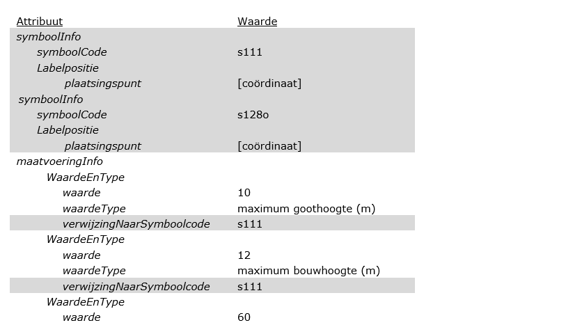
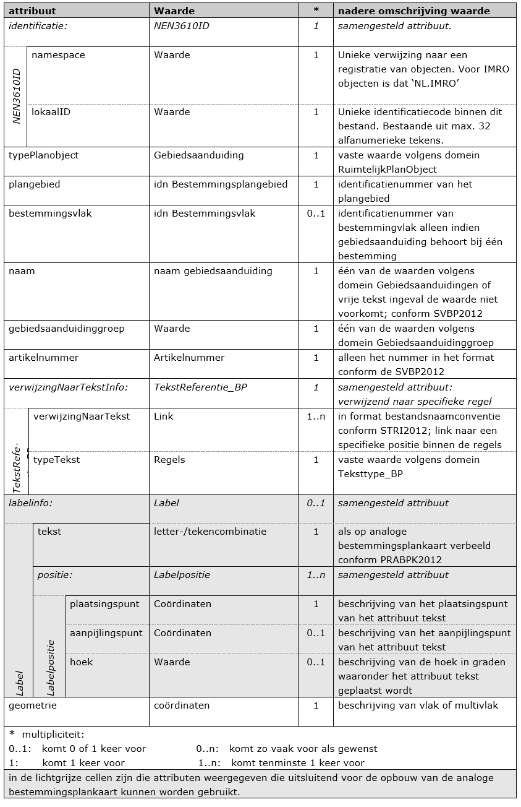

3.1 Klasse Bestemmingsplangebied
Het object (de klasse) Bestemmingsplangebied is het object dat het gebied, of
de gebieden, binnen de plangrenzen geometrisch representeert. Aan dit object
worden de algemene eigenschappen van het plangebied als attribuut gekoppeld.
In Tabel 2 zijn de attributen benoemd, de waarden aangegeven die deze attributen
kunnen bevatten en wordt aangegeven of het gebruik van het attribuut verplicht
is en of het attribuut meerdere malen mag worden gebruikt (multipliciteit). Ook
is aangegeven of het samengestelde attributen betreffen, dat wil zeggen altijd
in samenhang moeten worden gebruikt. Na de tabel is per attribuut een nadere
toelichting gegeven.
Tabel 2 Klasse Bestemmingsplangebied 1*

identificatie (verplicht):
Ieder ruimtelijk instrument kent een eigen identificatienummer (idn). Deze
identificatie maakt het mogelijk dat op landelijk niveau een uniek onderscheid
voor ieder instrument aanwezig is. Voor het geval het werkingsgebied bestaat uit
meerdere ruimtelijk gescheiden gebieden kent het totaal van die gebieden één
identificatienummer. De geometrie van het object Bestemmingsplangebied is
hierbij een multipolygoon.
Het samengestelde attribuut verwijst naar het object NEN3610ID bestaande uit de
attributen namespace, lokaalID en versie.
- namespace: (verplicht)
Een unieke verwijzing naar een registratie van objecten. Voor IMRO objecten
is dat ‘NL.IMRO’.
- lokaalID: (verplicht)
Unieke identificatiecode binnen de registratie van ruimtelijke plannen.
Bestaande uit een bronhouderscode van 4 cijfers (voor het Rijk 0000, voor
gemeente het CBS-nummer) gevolgd door een punt (.) en maximaal door de
bronhouder te bepalen 18 alfanumerieke tekens. Er geldt de volgende
reguliere expressie: [0-9]{4}\.[A-Za-z0-9]{1,18}
- Versie: (verplicht)
Versie-aanduiding van het plangebied bestaande uit 4 alfanumerieke tekens
door de bronhouder te bepalen. Er geldt de volgende reguliere expressie:
[A-Za-z0-9]{4}
Uit de waarden van de attributen namespace, lokaalID en versie wordt de
bestandsnaam van het plan opgebouwd conform STRI2012:
namespace.lokaalID-versie. De samengestelde reguliere expressie is:
NL\.IMRO\.[0-9]{4}\.[A-Za-z0-9]{1,18}-[A-Za-z0-9]{4}
typePlan (verplicht):
Voor het attribuut typePlan wordt het domein RuimtelijkPlanOfBesluit_BP
gebruikt. Voor de waarde zijn er vijf mogelijkheden waaruit er één moet worden
gekozen. De mogelijkheden zijn opgenomen in Tabel 3.
Tabel 3 Type plan

beleidsmatigVerantwoordelijkeOverheid (verplicht):
Hier wordt de overheid die beleidsmatig verantwoordelijk is voor het opstellen
van het plan opgenomen uit het domein Overheden_BP. In dit geval een van de
volgende vaste waarden:
- gemeentelijke overheid;
- deelgemeente/stadsdeel;
- provinciale overheid of
- nationale overheid.
naamOverheid (verplicht):
Hier wordt de naam van de beleidsmatig verantwoordelijke overheid opgenomen, in
de vorm van de tekst “gemeente …….”, “deelgemeente ……”, "stadsdeel ……",
“provincie …….” of “ministerie …….”. In het geval er meerdere verantwoordelijke
ministeries zijn, wordt naamOverheid evenzoveel ingevuld,
overheidsCode (verplicht):
Om inzichtelijk te maken van welke beleidsmatig verantwoordelijke overheid het
bestemmingsplan is, wordt hier het viercijferige CBS-nummer van die overheid
opgenomen. Voor deelgemeenten/stadsdelen wordt het nummer gebruikt van de
gemeente waartoe zij behoren. Voor de provincies worden, voorafgaand aan het
CBS-nummer van de provincie, twee voorloopnegens geplaatst, zodat de totale
lengte 4 posities bedraagt. Voor het Rijk wordt het nummer "0000" gebruikt.
naam (verplicht):
In het waardeveld van het attribuut naam dient de volledig naam van het
bestemmingsplan te worden opgenomen zoals deze in de Slotregel in de planregels
is opgenomen. De volledige naam is gelijk aan de aanhaaltitel in de planregels,
conform SVBP2012.
locatieNaam (indien gewenst / voorwaardelijk verplicht):
Het kan gewenst zijn om de geografische naam van de locatie waarbinnen het
bestemmingsplan zich bevindt kenbaar te maken. De naam (namen) van die locatie
kan bij dit attribuut worden ingevuld. Bij een bestemmingsplan buitengebied zal
bijvoorbeeld veelal geen locatienaam behoren, bij een bestemmingsplan voor
stedelijk gebied mogelijk wel.
Het is noodzakelijk (verplicht) het attribuut locatieNaam te gebruiken voor
zover het een inpassingsplan betreft dat door een provincie of door het Rijk
wordt opgesteld. In dat geval worden bij dit attribuut alle provincienamen en
gemeentenamen opgenomen waarbinnen het bestemmingsplan valt.
planstatusInfo (verplicht):
Dit attribuut is noodzakelijk om de plangegevens te kunnen plaatsen naar tijd en
belang. Het samengesteld attribuut planstatusInfo verwijst naar het object
PlanstatusEnDatum, bestaande uit de attributen:
- planstatus (verplicht)
Het domein Planstatus geeft de toegestane waarden voor het attribuut planstatus waaruit er één moet worden gekozen. De waarde van dit attribuut
geeft de planstatus weer.
- datum (verplicht)
Het attribuut datum is bedoeld om de proceduredatum van het plan op te
nemen. De in het waardeveld op te nemen datum dient overeenkomstig het in
IMRO2012 afgesproken datumformaat te worden genoteerd: jjjj-mm-dd.
besluitnummer (onder voorwaarde verplicht):
Nummer van het vaststellingsbesluit van het plan. Het besluitnummer is alleen
toegestaan en verplicht indien de planstatus vastgesteld.
verwijzingNaarVaststellingsbesluit (onder voorwaarde verplicht):
Hierin wordt een link opgenomen naar de tekst van het vaststellingsbesluit. In
het format volgens de bestandsnaamconventie vaststellingsbesluit conform de
STRI2012. De link is alleen verplicht bij de planstatus vastgesteld. Bij een
andere (eerdere) planstatus is dit attribuut niet toegestaan. Aan het bestand
kunnen indien gewenst ook door de bronhouder andere relevant geachte stukken,
die voor een goed begrip nodig kunnen zijn, zoals het raadsvoorstel, worden
toegevoegd.
verwijzingNaarTekstInfo (verplicht):
Dit attribuut verwijst naar het samengestelde attribuut TekstReferentiePG_BP,
bestaande uit de attributen verwijzingNaarTekst en typeTekst.
Het attribuut wordt met de volgende cardinaliteit opgenomen:
- 1 verwijzing naar volledige toelichting.
- 1 verwijzing naar volledige regels.
- 0..2 verwijzing naar elk typeTekst volledige bijlagen.
Teneinde een zo beperkt mogelijk aantal verwijzingen naar teksten te verkrijgen
is het aantal keren dat het attribuut verwijzingNaarTekstInfo mag worden
gebruikt beperkt. De raadpleger van de plannen heeft daar baat bij, omdat hij
dan niet direct geconfronteerd wordt met een mogelijk lange lijst van
verwijzingen. Daarom moet er maximaal één verwijzing zijn naar de volledige
toelichting en maximaal één naar de volledige regels. Daarnaast mag er maximaal
één verwijzing zijn naar alle eventuele bijlagen, gegroepeerd naar bijlage(n)
bij toelichting en bijlage(n) bij regels. Er mag worden verwezen naar een
inhoudsopgave of index, waardoor indirect meer mogelijkheden aanwezig zijn.
De bronhouder kiest voor het al dan niet gebruik van objectgerichte planteksten.
In beide gevallen wordt dit attribuut verwijzingNaarTekstInfo gebruikt. De
keuze voor XML of HTML/PDF planteksten geldt niet alleen voor het
bestemmingsplangebied, de keuze geldt ook voor de andere objecten (bestemmingen/
aanduidingen) binnen het bestemmingsplan. Daarnaast wordt de keuze vastgelegd
met behulp van het attribuut verwijzingNorm bij Bestemmingsplangebied van dit
bestemmingsplan. Het format dient overeenkomstig de afspraak over de
bestandsnaamconventies conform de STRI2012 te zijn.
- verwijzingNaarTekst (verplicht)
De waarde van dit attribuut is een (hyper)link naar het soort document dat
is aangegeven bij het attribuut typeTekst. Er wordt in de waarde geen
elementen van een directory structuur/pad opgenomen.
- typeTekst (verplicht)
Hiermee wordt aangegeven om wat voor type tekst het gaat. Per verwijzing
naar tekst dient gekozen te worden uit een van de volgende waarden van het
domein TeksttypePG_BP:
- regels
- toelichting
- bijlage bij regels
- bijlage bij toelichting
ondergrondInfo (verplicht, zo vaak als gewenst):
Dit attribuut verwijst naar het samengestelde attribuut Ondergrondreferentie,
bestaande uit de attributen ondergrondtype en ondergronddatum. Met dit
attribuut wordt, conform artikel 1.2.4 Bro, aangegeven welke ondergrond bij het
vaststellen van het bestemmingsplan is gebruikt.
Er zijn meerdere waarden mogelijk.
- ondergrondtype (verplicht)
- Het type van de gebruikte ondergrond volgens het domein Ondergronden. Op
grond van de Wet basisregistratie grootschalige topografie (BGT) is het per
1 juli 2017 voor bestuursorganen verplicht om gebruik te maken van de Basisregistratie Grootschalige Topografie (BGT). Een bestuursorgaan kan
daar indien nodig gemotiveerd van afwijken. Bij afwijking kan het
bestuursorgaan gebruik maken van: basisregistratie topografie (BRT)
- basisregistratie kadaster (BRK)
Indien geen gebruik is gemaakt van een ondergrond uit het domein
Ondergronden, dan wordt de naam van het bestand van de gebruikte
ondergrond(en) als vrije tekst opgegeven. In de PRTRI2012, hoofdstuk 7, is
toegelicht welke bestandformaten voor de ondergrond kunnen worden gebruikt.
- ondergronddatum (verplicht)
De datum van de gebruikte ondergrond.
verwijzingNaarExternPlanInfo (onder voorwaarde verplicht):
Dit attribuut betreft een verwijzing naar het externe plan waar het type plan
een gevolg van is. De verwijzing naar het externe plan wordt verplicht opgenomen
bij het typePlan:
- uitwerkingsplan;
- wijzigingsplan.
Bij de waarde van het typePlan bestemmingsplan, inpassingsplan en
rijksbestemmingsplan mag het attribuut verwijzingNaarExternPlanInfo worden
gebruikt. Een ander ruimtelijk plan of besluit, zoals een aanwijzingsbesluit,
kan juist de aanleiding zijn voor dit nieuwe bestemmingsplan, inpassingsplan of
rijksbestemmingsplan. In dat geval kan de bronhouder dit aan de informatie van
het plan toevoegen met behulp van het attribuut verwijzingNaarExternPlanInfo.
Het attribuut verwijst naar het samengestelde attribuut ExternPlanReferentie,
bestaande uit de attributen naamExternPlan, idnExternPlan en rolExternPlan.
- naamExternPlan (verplicht)
Hier wordt de naam van het externe plan waarnaar verwezen wordt opgegeven.
In het geval een typePlan uitwerkingsplan of wijzigingsplan is, wordt de
naam van het bestemmingsplan opgenomen waarvan dit een uitwerking of
wijziging.
- idnExternPlan (indien bekend)
Met dit attribuut wordt de identificatie (idn) van het externe plan waarnaar
wordt verwezen opgenomen.
- rolExternPlan (verplicht)
Hierin wordt de betekenis van het externe plan ten opzichte van het hier
betreffende plan vastgelegd. Het betreft hier een van de volgende vaste
waarden uit het domein RolExternPlan_BP:
- ten gevolge van extern plan in geval van bijvoorbeeld een uitwerkings- of
wijzigingsplan, of in geval van een aanwijzingsbesluit, en dergelijke;
- ter vervanging van extern plan voor het geval het een gedeeltelijke
herziening van een bestemmingsplan betreft, als uiteengezet in Hoofdstuk 4
van deze praktijkrichtlijn;
- als mutatie opgenomen voor het geval er sprake is van een"geconsolideerd
plan ", als uiteengezet in Hoofdstuk 4 van deze praktijkrichtlijn.
verwijzingNorm (verplicht):
Teneinde de zekerheid te hebben welke technische status de data hebben, is het
noodzakelijk dat wordt aangegeven aan welke IMRO versie de gegevensset voldoet.
Tevens moet een verwijzing worden opgenomen naar de gebruikte versie van de
praktijkrichtlijn. In het geval objectgerichte planteksten (XML) onderdeel zijn
van het bestemmingsplan, dan wordt ook de verwijzing naar de standaard voor
planteksten opgenomen.
Het attribuut verwijzingNorm dient minimaal twee keer te worden opgenomen
met de verwijzing naar de betreffende versies in het waardeveld: IMRO2012 en
PRBP2012. Bij het gebruik van objectgerichte planteksten in dit ruimtelijk plan
moet ook worden opgenomen: IMROPT2012. Indien gebruik wordt gemaakt van een
vaste weergave voor de analoge bestemmingsplankaart wordt ook de verwijzing naar
de PRABPK2012 opgenomen bij het bestemmingsplangebied: PRABPK2012. In dat geval
geldt het gebruik van de opmaak van de analoge bestemmingsplan kaartconform
PRABPK2012 voor dit gehele bestemmingsplan.
geometrie (verplicht):
Het object Bestemmingsplangebied kent uitsluitend de geometrie van een vlak of
multivlak (multipolygoon). Dit attribuut kent coördinaten in een vastgesteld
format (GML).
3.2 Klasse Bestemmingsvlak
Het bestemmingsvlak is het belangrijkste object (klasse) binnen het
bestemmingsplangebied. De eigenschappen van dit object worden bepaald door een
aantal attributen dat aan dat object wordt gekoppeld.
In Tabel 4 zijn de attributen benoemd, waarbij per attribuut is aangegeven
welke waarde gewenst is, welke dit moet zijn, of het gebruik van het attribuut
verplicht is, of het attribuut meerdere keren mag voorkomen en hoe de waarde,
al dan niet automatisch, wordt ingevoerd. Het object Bestemmingsvlak is niet
verplicht indien het typePlan een inpassingsplan of wijzigingsplan betreft.
Ook is aangegeven of attributen gekoppeld zijn, dat wil zeggen altijd in
samenhang moeten worden gebruikt. Na de tabel is per attribuut een toelichting
gegeven.
Tabel 4 Klasse Bestemmingsvlak 1..n*

identificatie (idn) (verplicht):
Elk object Bestemmingsvlak krijgt een eigen unieke identificatie binnen het
bestemmingsplan. Het samengestelde attribuut identificatie verwijst naar het
object NEN3610ID bestaande uit de attributen namespace en lokaalID.
- namespace: (verplicht)
Een unieke verwijzing naar een registratie van objecten. Voor IMRO objecten
is dat ‘NL.IMRO’.
- lokaalID: (verplicht)
Door de bronhouder te bepalen unieke identificatiecode binnen de context van
het bestand bestaande uit maximaal 32 alfanumerieke tekens. Toegestane
tekens: {”A”…”Z”, “a”…”z”, ”0”…”9”, “_”, “- “, “,”, ”.”}.
typePlanobject (verplicht):
Het attribuut typePlanobject maakt het via het bijbehorende domein
RuimtelijkPlanobject mogelijk aan te geven welk object het betreft. Dit
domein kent daarvoor twee waarden: enkelbestemming en dubbelbestemming. Daaruit
moet worden gekozen.
"Enkel"bestemmingen zijn te allen tijde tezamen vlakdekkend binnen het
plangebied. Bij inpassingsplannen, bestemmingsplanherzieningen die alleen iets
toevoegen aan of verwijderen uit de vigerende bestemmingen en/of bijbehorende
regels is de vereiste van een door enkelbestemming vlakdekkend plangebied niet
van toepassing. Ook bij een wijzigingsplan hoeft het plangebied niet volledig te
worden bedekt door enkelbestemmingen. Conform IMRO is het toegestaan in deze
situaties de bestemming achterwege te laten. Doorgaans heeft het de voorkeur wel
een bestemming op te nemen, die van toepassing wordt verklaard in de planregels,
waar vervolgens wordt verwezen (met identificatienummer) naar het oorspronkelijk
plan. De volledige regels hoeven daardoor niet te worden overgenomen. Of
bestemmingen met bijbehorende regels wel/ niet worden opgenomen is aan de
bronhouder te bepalen en in de planregels te verantwoorden.
Bestemmingen kunnen ook de vorm van een zogenoemde dubbelbestemming hebben.
Onder een dubbelbestemming wordt een aparte bestemming verstaan die (een)
andere bestemming(en) willekeurig overlapt. Een voorbeeld kan de bestemming
"Leiding - Gas” zijn, die andere bestemmingen overlapt. In geval van
bijvoorbeeld de bestemming "Gemengd" is evenwel geen sprake van een
dubbelbestemming maar van meerdere bestemmingsfuncties binnen één bestemming.
Uit overweging van herkenbaarheid van een dubbelbestemming ten opzichte van de
enkelbestemming is het gewenst om deze als apart object te kunnen onderscheiden.
Voor dubbelbestemmingen geldt dat deze op gelijke wijze worden gecodeerd als
een enkelbestemming.
plangebied (verplicht):
Voor elk object is een verwijzing noodzakelijk naar het object
Bestemmingsplangebied waar het object deel van uitmaakt. Dit attribuut
verwijst daartoe naar het attribuut identificatie van het bijbehorende object
Bestemmingsplangebied.
naam (verplicht):
Iedere bestemming heeft een naam. Aan het attribuut naam wordt als waarde de
volledige naam van de bestemming, zoals deze luidt in de bestemmingsregel die
ernaar verwijst, meegegeven. De wijze waarop de naam van een bestemming tot
stand komt, is bepaald in de SVBP2012. Voor de naam van een bestemming zijn vier
varianten mogelijk:
- Naam van de hoofdgroep hanteren. Voorbeeld: Agrarisch
- Specifieke bestemmingsbenaming gebruiken. Voorbeeld: Agrarisch - Akkerbouw
- Bestemming splitsen. Voorbeeld : Gemengd - 1
- Bestemming onder de hoofdgroep Overig. Voorbeeld: Enclave
De systematiek van hoofdgroepen van bestemmingen in de SVBP2012 laat het toe een
bestemming te specificeren en slechts één of enkele functies van een hoofdgroep
binnen een bestemming mogelijk te maken.
Indien een functie niet in de lijst van de SVBP2012 voorkomt, dan dient
aansluiting te worden gezocht bij de meest passende hoofdgroep. Selectiviteit
kan gewenst zijn, zeker in geval van hoofdgroepen waarbij een veelheid aan
uiteenlopende hoofdfuncties aan de orde is. Denk hierbij aan hoofdgroepen zoals
Cultuur en Ontspanning en Maatschappelijk.
In de hoofdgroep Leiding komt zowel hoogspanning als hoogspanningsverbinding
voor. Het verschil tussen deze dubbelbestemmingen is dat een Leiding –
Hoogspanning een ondergrondse leiding betreft. Een Leiding -
Hoogspanningsverbinding betreft een bovengronds leiding.
Tot slot komen binnen veel hoofdgroepen ondergeschikte functies voor, zoals
groen, wegen, paden en water. Deze zijn niet bepalend voor de keuze van de
hoofdgroep. Bepalend voor die keuze zijn de genoemde hoofdfunctie(s).
Ondergeschikte, bij de hoofdfunctie(s) behorende functies kunnen altijd, naar
gelang de behoefte, aan de bestemmingsomschrijving worden toegevoegd, ook als
zij niet bij de betrokken hoofdgroep worden vermeld. Hetzelfde geldt voor
functies die ten dienste staan van de functie op basis waarvan de bestemming is
gekozen. Hierbij kan worden gedacht aan de combinatie sport en daaraan
ondergeschikte horeca en de combinatie bedrijf en daaraan ondergeschikte
detailhandel (bijvoorbeeld in ter plaatse vervaardigde goederen).
Een (dubbel)bestemming geeft aan waarvoor de gronden mogen worden gebruikt. Het
zijn zaken die men aan kan raken, in de grond aanwezig zijn of zichtbaar zijn.
bestemmingshoofdgroep (verplicht):
Bij de SVBP2012 is een functielijst opgenomen. Bij de functies zijn hoofdgroepen
vermeld waarmee functies worden gekoppeld aan een hoofdgroep waaronder deze
bestemming moet worden gerangschikt. Daarbij wordt onderscheid gemaakt in
(enkel)bestemmingen en dubbelbestemmingen. Deze lijsten zijn tevens in het
IMRO2012 opgenomen als domeinlijsten.
Het attribuut bestemmingshoofdgroep is bedoeld om de gebruikte bestemming te
relateren aan de betreffende hoofdgroep. Dit geschiedt door in het waardeveld de
naam van de betreffende hoofdgroep op te nemen. Het domein Bestemmingshoofdgroep_E geeft de mogelijke waarden weer voor
(enkel)bestemmingen waaruit moet worden gekozen. Het domein Bestemmingshoofdgroep_D geeft de mogelijke waarden weer voor
dubbelbestemmingen waaruit moet worden gekozen. In het attribuut typePlanobject is opgenomen of het een enkelbestemming dan wel een
dubbelbestemming betreft.
Voor het geval de bestemming een voorlopige bestemming betreft, wordt alleen de
voorlopige bestemming gebruikt om de bijbehorende hoofdgroep te bepalen.
artikelnummer (verplicht):
Het artikelnummer wordt als waarde bij het attribuut artikelnummer
meegegeven. Het format van het artikelnummer is voorgeschreven in de SVBP2012.
verwijzingNaarTekstInfo (verplicht):
Het attribuut is bedoeld voor het verwijzen naar het specifieke artikel dat
behoort bij het betreffende object Bestemmingsvlak. Het attribuut verwijst
naar het samengestelde attribuut TekstReferentie_BP, bestaande uit de
attributen verwijzingNaarTekst en typeTekst.
De bronhouder kiest voor dezelfde vorm van planteksten als bij het object Bestemmingsplangebied: objectgericht in XML of niet-objectgericht in HTML
formaat. Het format dient overeenkomstig de afspraak over de
bestandsnaamconventies conform de STRI2012 te zijn. De keuze van de bronhouder
wordt vastgelegd in de verwijzingNorm bij dit bestemmingsplan.
- verwijzingNaarTekst (verplicht)
Dit attribuut is bedoeld om (hyper)links te kunnen opnemen. Hier dient een
(hyper)link naar het soort document dat is aangegeven bij het attribuuttypeTekst te worden opgenomen.
Voor de waarde van het attribuut verwijzingNaarTekst geldt dat geen
elementen van een directorystructuur/pad mogen worden opgenomen. Wel moet
een nadere precisering naar de plaats binnen een document te worden
opgenomen met behulp van een fragmentidentifier. Het fragment in de
hyperlink is de locatie in de plantekst (XML of HTML) waar het van
toepassing zijnde attribuut typeTekst betrekking op heeft. Een hyperlink
krijgt dan de vorm: bestandsnaam.xml#fragmentof bestandsnaam.htm#fragment.
- typeTekst (verplicht)
Hiermee wordt met de vaste waarde regels volgens het domein Teksttype_BP
aangegeven dat de tekst waarnaar verwezen wordt een regel betreft.
labelInfo (facultatief):
Dit attribuut, dat uitsluitend bedoeld is voor de analoge bestemmingsplankaart,
verwijst naar het samengestelde attribuut Label, bestaande uit de attributen tekst en het samengestelde attribuut positie.
- tekst (verplicht)
In het waardeveld van dit attribuut wordt de lettercode
(letter-/tekencombinaties) van de gebruikte bestemmingsnaam opgenomen.
In de Praktijkrichtlijn Analoge Bestemmingsplan Kaart (PRABPK2012) is
aangegeven welke lettercodes in de waarde van dit attribuut worden opgenomen
die (de hoofdgroep van) de bestemming aangegeven. Deze lettercode is een
verbeeldingsmiddel ten behoeve van de leesbaarheid van de analoge
bestemmingsplankaart. De lettercode bestaat uit hoofdletters. Bij de
digitale verbeelding worden deze lettercodes niet getoond, maar de waarde
van het attribuut naam wordt getoond na interactie met de digitale
verbeelding.
- positie (verplicht, zo vaak als gewenst):
Soms bestaat er aanleiding de letter-/tekencombinatie van het attribuut tekst meerdere keren binnen één bestemming op de analoge
bestemmingsplankaart te laten voorkomen. In dat geval worden meerdere
attributen positie meegegeven. Het attribuut positie verwijst naar het
samengestelde attribuut Labelpositie, bestaande uit de attributen plaatsingspunt, aanpijlingspunt en hoek.
- plaatsingspunt (verplicht)
Het is nodig dat een plaatsingspunt voor de lettercode wordt opgenomen. Het
plaatsingspunt van het label staat links beneden ten opzichte van de
labeltekst.
In het geval het bij de analoge bestemmingsplankaart gewenst is meerdere
dezelfde letter-/tekencombinaties binnen één bestemmingsvlak te plaatsen,
dan worden meerdere plaatsingspunten opgenomen.
- aanpijlingspunt (indien gewenst)
Soms kan een lettercode niet binnen het bijbehorende vlak op de analoge
bestemmingsplankaart worden geplaatst omdat de schaal van de analoge
bestemmingsplankaart dat niet toelaat. In dat geval wordt de lettercode
buiten dat vlak geplaatst. Er is dan een aanpijling naar dat vlak
noodzakelijk zodat duidelijk is waar de lettercode bij behoort. Voor dit
doel is het aanpijlingspunt noodzakelijk.
- hoek (indien gewenst)
Soms is het gewenst dat een lettercode onder een bepaalde hoek wordt
geplaatst. Voor dit doel is invullen van de waarde van die hoek
noodzakelijk.
geometrie (verplicht):
Het object Bestemmingsvlak kent uitsluitend de geometrie van een vlak. Dit
attribuut kent daarom coördinaten in een vastgesteld format (GML).
3.3 Klasse Aanduiding
3.3.1 Algemeen
Naast bestemmingsvlakken komen aanduidingen voor waarnaar de regels verwijzen.
De SVBP2012 geeft een zestal te onderscheiden typen aanduidingen aan. Deze
aanduidingen worden gerepresenteerd onder de Klasse Aanduiding in zes
(sub)klassen:
- Bouwvlak;
- Functieaanduiding;
- Bouwaanduiding;
- Maatvoering;
- Figuur;
- Gebiedsaanduiding.
De objecten uit de zes (sub)klassen Aanduiding hebben alle een relatie met een
object Bestemmingsplangebied. Aanduidingen kunnen daarnaast ook een relatie
hebben met een object Bestemmingsvlak of met andere aanduidingen. Voor een
eenvoudig hanteerbaar model, maar ook om een begrijpelijk toepasbaar model te
hebben, zijn niet alle relaties zinvol. Uitgesloten zijn daarom verwijzingen
naar andere aanduidingen van hetzelfde type en naar aanduidingen die zelf geen
gebied representeren. Daarnaast geldt dat de klasse Bouwvlak alleen een
relatie heeft met het object Bestemmingsvlak en de klasse Gebiedsaanduiding een relatie kan hebben met het object Bestemmingsvlak.
Daardoor resteren uiteindelijk alleen de relaties die in Figuur 5 in groen zijn
aangegeven. Het attribuut aanduiding bij de klassen Functieaanduiding,
Bouwaanduiding, Maatvoering en Figuur geeft deze mogelijke relaties van het
betreffende object aan. In de volgende subparagrafen wordt hier nader op
ingegaan.
Voor het coderen dient eerst de vraag gesteld te worden welke van de zes
(sub)klassen het betreft. In dat geval is het overzicht in Figuur 5 van
toepassing. Hierin wordt nader ingegaan op de onderscheiden (sub)klassen. De
(sub)klassen zelf worden ook object genoemd.

Figuur 5 Relatiediagram aanduidingen
3.3.2 Klasse Bouwvlak
Een bouwvlak is een gebied waarbinnen volgens de regels de mogelijkheden voor
bouwen nader worden benoemd. Bijna ieder bestemmingsplan kent bouwvlakken. Het
bouwvlak is meestal kleiner dan het bestemmingsvlak, maar kan ook even groot
zijn. Het bouwvlak kent daarmee de geometrie van een vlak en wordt beschouwd
als een object. Het is mogelijk meerdere objecten Bouwvlak binnen het
bestemmingsplan toe te passen.
Bouwvlakken behoren altijd bij een bestemming, waardoor te allen tijde een
directe relatie aanwezig is tussen het object Bouwvlak en het object
Bestemmingsvlak. Wanneer een bouwvlak, visueel beschouwd, zich uitstrekt
over meerdere bestemmingen is desondanks sprake van meerdere bouwvlakken,
namelijk per onderscheiden bestemming opgedeeld in aparte objecten.
Sporadisch kan het voorkomen dat twee aparte bouwvlakken binnen één bestemming
in juridische zin tezamen één bouwvlak moeten vormen. Bijvoorbeeld in geval van
twee bij elkaar behorende agrarische bouwpercelen. In het geval beide
bouwvlakken binnen hetzelfde bijbehorende bestemmingsvlak liggen, zal de
geometrie van deze bouwvlakken een multivlak (multipolygoon) zijn, waardoor
zij als één object worden beschouwd. In het andere geval zijn het twee aparte
objecten die elk behoren bij het bijbehorende bestemmingsvlak. In beide gevallen
zal (mogelijk) het object Figuur, nader aangewezen met de domeinwaarde relatie gebruikt worden om de relatie in de verbeelding zichtbaar te maken.
In Tabel 5 zijn de attributen benoemd, de waarden aangegeven die deze attributen
moeten bevatten en wordt aangegeven of het gebruik van het attribuut verplicht
is en of het attribuut meerdere malen mag worden gebruikt. Na de tabel is per
attribuut een nadere toelichting gegeven.
Tabel 5 Klasse Bouwvlak 0..n*

identificatie (idn) (verplicht):
Elk object Bouwvlak krijgt een eigen unieke identificatie binnen het
bestemmingsplan. Het samengestelde attribuut identificatie verwijst naar het
object NEN3610ID bestaande uit de attributen namespace en lokaalID.
- namespace: (verplicht)
Een unieke verwijzing naar een registratie van objecten. Voor IMRO objecten
is dat ‘NL.IMRO’.
- lokaalID: (verplicht)
Door de bronhouder te bepalen unieke identificatiecode binnen de context van
het bestand bestaande uit maximaal 32 alfanumerieke tekens. Toegestane
tekens: {”A”…”Z”, “a”…”z”, ”0”…”9”, “_”, “- “, “,”, ”.”}.
typePlanobject (verplicht):
Een aanduiding is te beschouwen als een object waarvoor het domein
RuimtelijkPlanobject van toepassing is. Dit domein kent daarvoor de waarde
bouwvlak die als vaste waarde (automatisch) wordt ingevuld.
plangebied (verplicht):
Binnen elk object Bouwvlak is een verwijzing noodzakelijk naar het object Bestemmingsplangebied waar dit object deel van uitmaakt. Dit attribuut
krijgt daartoe de waarde van het attribuut identificatie van het bijbehorende
object Bestemmingsplangebied.
bestemmingsvlak (onder voorwaarde verplicht):
Een bouwvlak heeft altijd een relatie met een bestemmingsvlak, behoudens enkele
uitzonderingen die hier onder worden toegelicht. De waarde van het attribuut
identificatie van het bijbehorende bestemmingsvlak wordt aan het bouwvlak
onder het attribuut bestemmingsvlak toegevoegd. Bij het plantype
inpassingsplan of wijzigingsplan, of indien bij het plangebied het attribuut de
waarde ‘ter vervanging van extern plan’ is opgenomen, is het mogelijk om geen
verwijzing van het bouwvlak naar de bestemming op te nemen. In deze situaties is
het namelijk toegestaan een bestemmingsplan te maken zonder bestemmingsvlakken.
Een nadere toelichting op de werkwijze is gegeven in Hoofdstuk 4 van deze
praktijkrichtlijn.
naam (verplicht):
Aan het attribuut naam wordt als waarde de naam van de aanduiding, zoals deze
in de regels wordt gebruikt, meegegeven. Dit is hier de vaste waarde bouwvlak
aangezien slechts één type mogelijk is.
geometrie (verplicht):
Het object Bouwvlak kent uitsluitend de geometrie van een vlak of multivlak.
Dit attribuut kent daarom coördinaten in een vastgesteld format (GML).
3.3.3 Klasse Functieaanduiding
De SVBP2012 geeft aan dat een functieaanduiding wordt gebruikt om de
gebruiksmogelijkheden binnen een bestemming of een gedeelte daarvan nader te
specificeren. De SVBP2012 geeft tevens aan welke aanduidingen mogen worden
gebruikt en hoe daarmee in relatie tot de planregels moet worden omgegaan.
De functieaanduiding slaat of op het gehele bestemmingsvlak of op een gedeelte
daarvan. De functieaanduiding wordt daarom gerepresenteerd door het gebied
waarop deze van toepassing is. Dit gebied heeft een eigen geometrie als vlak en
wordt daarmee beschouwd als het object Functieaanduiding. Het is mogelijk
meerdere objecten Functieaanduiding binnen het bestemmingsplan toe te passen.
Het object Functieaanduiding heeft altijd een relatie met een onderliggend
object. Dit kan zijn een Bestemmingsvlak of een Gebiedsaanduiding.
Indien het object Functieaanduiding behoort bij een bestemmingsvlak, wordt met
het attribuut bestemmingsvlak naar de identificatie (idn) van het object Bestemmingsvlak, waarbij het behoort, verwezen.
Indien het object Functieaanduiding behoort bij een gebiedsaanduiding wordt
met het attribuut aanduiding naar de idn van het object Gebiedsaanduiding,
waarbij het behoort, verwezen.
Het object Functieaanduiding verwijst met het attribuut plangebied altijd
naar de idn van het object Bestemmingsplangebied.
Het kan ook voorkomen dat meerdere, verschillende functieaanduidingen binnen
één bestemming noodzakelijk zijn omdat de regels dat vereisen. In dat geval
komt het object Functieaanduiding meerdere keren voor.
In Tabel 6 zijn de attributen benoemd, de waarden aangegeven die deze
attributen moeten bevatten en is aangegeven of het gebruik van het attribuut
verplicht is en of het attribuut meerdere malen mag worden gebruikt. Ook is
aangegeven of attributen gekoppeld worden, dat wil zeggen altijd in samenhang
moeten worden gebruikt. Na de tabel is per attribuut een nadere toelichting
gegeven.
Tabel 6 Klasse functieaanduiding 0..n*

identificatie (idn) (verplicht):
Elk object Functieaanduiding krijgt een eigen unieke identificatie binnen het
bestemmingsplan. Het samengestelde attribuut identificatie verwijst naar het
object NEN3610ID bestaande uit de attributen namespace en lokaalID.
- namespace: (verplicht)
Een unieke verwijzing naar een registratie van objecten. Voor IMRO objecten
is dat ‘NL.IMRO’.
- lokaalID: (verplicht)
Door de bronhouder te bepalen unieke identificatiecode binnen de context van
het bestand bestaande uit maximaal 32 alfanumerieke tekens. Toegestane
tekens: {”A”…”Z”, “a”…”z”, ”0”…”9”, “_”, “- “, “,”, ”.”}.
typePlanobject (verplicht):
Een aanduiding is te beschouwen als een object waarvoor het domein
RuimtelijkPlanobject van toepassing is. Dit domein kent daarvoor de waarde
functieaanduiding die als vaste waarde wordt ingevuld.
plangebied (verplicht):
Binnen elk object Functieaanduiding is een verwijzing noodzakelijk naar het
object Bestemmingsplangebied waar dit object deel van uitmaakt. Dit attribuut
krijgt daartoe de waarde van het attribuut identificatie van het bijbehorende
object Bestemmingsplangebied.
bestemmingsvlak (onder voorwaarde verplicht) :
Aangezien er (meestal) een directe relatie aanwezig is tussen een
functieaanduiding en een onderliggend bestemmingsvlak is dit attribuut hier
onder voorwaarde als verplicht opgenomen. Het attribuut kent als waarde de
inhoud van het attribuut identificatie van het bijbehorende bestemmingsvlak.
Indien de functieaanduiding evenwel behoort bij een gebiedsaanduiding dient dit
attribuut niet te worden gebruikt, maar het hierna volgende attribuut
aanduiding.
Bij het plantype inpassingsplan of wijzigingsplan, of indien bij het plangebied
het attribuut de waarde ‘ter vervanging van extern plan’ is opgenomen, is het
mogelijk om geen verwijzing van de functieaanduiding naar de bestemming op te
nemen. In deze situaties is het namelijk toegestaan een bestemmingsplan te maken
zonder bestemmingsvlakken. Een nadere toelichting op de werkwijze is gegeven in
Hoofdstuk 4 van deze praktijkrichtlijn.
aanduiding (onder voorwaarde verplicht):
Indien de functieaanduiding behoort bij een gebiedsaanduiding dient als waarde
van dit attribuut de identificatie (idn) van het bijbehorende attribuut
gebiedsaanduiding te worden opgenomen.
Het attribuut is facultatief bij de plantypen inpassingsplan, wijzigingsplan of
bij het gedeeltelijk herzien van een bestemmingsplan.
naam (verplicht):
De werkwijze om te komen tot de naam van een functieaanduiding is bepaald in de
SVBP2012. De waarde van het attribuut naam kan door de bronhouder gekozen
worden uit de lijst van functies die is opgenomen als bijlage van de SVBP2012.
In het geval de gewenste functie niet in de functielijst voorkomt, is de naam
van de gebruikte functieaanduiding door de bronhouder te bepalen conform
‘variant 2 – specifieke functie opnemen’ van de SVBP2012 onder
functieaanduidingen. Deze variant bepaalt dat er ook gewerkt kan worden met
specifieke functies. De naam van een specifieke functie wordt geheel met kleine
letters geschreven en wordt als volgt opgenomen:
[specifieke vorm van] [spatie] <<hoofdgroep ="">> [spatie] [-] [spatie]
<specificatie>.
In het geval dat een specifieke functie niet is toegestaan op een locatie in het
bestemmingsplan, wordt deze uitgesloten functie als volgt opgenomen:
[specifieke vorm van] [spatie] <<hoofdgroep>> [spatie] [uitgesloten]
[spatie] [-] [spatie] <specificatie>
Het attribuut naam is essentieel voor een juist juridisch gebruik van het
bestemmingsplan. Bij het raadplegen van een bestemmingsplan zal de waarde van
het attribuut naam getoond worden. De waarde van het attribuut naam moet
daartoe identiek zijn aan de functie die in de planregel wordt genoemd.
labelInfo (facultatief):
De waarde van dit attribuut is uitsluitend bedoeld voor de weergave op de
analoge bestemmingsplankaart volgens de PRABPK2012. Het kan zijn dat vanuit de
regels meerdere verschillende functieaanduidingen binnen één bestemmingsvlak
moeten worden opgenomen. In dat geval komt het object Functieaanduiding
meerdere keren voor. Het attribuut labelInfo verwijst naar het samengestelde
attribuut Label, bestaande uit de attributen tekst en positie.
- tekst (verplicht)
Het attribuut tekst bevat de exacte en complete weergave van de
functieaanduiding zoals die op de analoge bestemmingsplankaart moet worden
weergegeven. Voor het gewenste format van de weergave, bestaande uit een
letter-/tekencombinatie tussen haakjes "(…)", wordt verwezen naar de
PRABPK2012. Bij de digitale verbeelding wordt deze letter-/tekencombinatie
niet getoond, maar in plaats daarvan de waarde van het attribuut naam.
- positie (verplicht, zo vaak als gewenst):
Soms bestaat er aanleiding de letter-/tekencombinatie van het attribuut tekst meerdere keren binnen één bestemming op de analoge bestemmingsplan
kaart te laten voorkomen. In dat geval worden meerdere attributen positie
meegegeven. Het attribuut positie verwijst naar het samengestelde
attribuut Labelpositie, bestaande uit de attributen plaatsingspunt,
aanpijlingspunt en hoek.
- plaatsingspunt (verplicht)
Het is nodig dat een plaatsingspunt voor de letter-/tekencombinatie wordt
opgenomen. Het plaatsingspunt van het label links beneden ten opzichte van
de labeltekst.
In het geval het bij de analoge bestemmingsplankaart gewenst is meerdere
dezelfde letter-/tekencombinaties binnen één bestemmingsvlak of
gebiedsaanduiding te plaatsen, dan worden meerdere plaatsingspunten
opgenomen.
- aanpijlingspunt (indien gewenst)
Soms kan de letter-/tekencombinatie niet binnen het bijbehorende vlak op de
analoge bestemmingsplankaart worden geplaatst omdat de schaal van de analoge
bestemmingsplankaart dat niet toelaat. In dat geval wordt de
letter-/tekencombinatie buiten dat vlak geplaatst. Er is dan een aanpijling
naar dat vlak noodzakelijk zodat duidelijk is waar de
letter-/tekencombinatie bij behoort.
- hoek (indien gewenst)
Soms is het gewenst dat de letter-/tekencombinatie onder een bepaalde hoek
op de analoge bestemmingsplankaart wordt geplaatst. Voor dit doel is de
waarde van die hoek noodzakelijk en dient te worden ingevuld.
verwijzingNaarTekstInfo (facultatief):
Het attribuut is bedoeld voor het verwijzen naar het specifieke artikel dat
behoort bij het bijbehorende object. Het attribuut verwijst naar het
samengestelde attribuut TekstReferentie_BP, bestaande uit de attributen
verwijzingNaarTekst en typeTekst.
De bronhouder kiest voor dezelfde vorm van planteksten als bij het object
Bestemmingsplangebied: objectgericht in XML of niet-objectgericht in HTML
formaat. Het format dient overeenkomstig de afspraak over de
bestandsnaamconventies conform de STRI2012 te zijn. De keuze van de bronhouder
wordt vastgelegd in de verwijzingNorm bij dit bestemmingsplan.
- verwijzingNaarTekst (verplicht)
Dit attribuut is bedoeld om (hyper)links te kunnen opnemen. Hier dient een
(hyper)link naar het soort document dat is aangegeven bij het attribuut typeTekst te worden opgenomen.
Voor de waarde van het attribuut verwijzingNaarTekst geldt dat geen
elementen van een directorystructuur/pad mogen worden opgenomen. Wel moet
een nadere precisering naar de plaats binnen een document te worden
opgenomen met behulp van een fragmentidentifier. Het fragment in de
hyperlink is de locatie in de plantekst (XML of HTML) waar het van
toepassing zijnde attribuut typeTekst betrekking op heeft. Een hyperlink
krijgt dan de vorm: bestandsnaam.xml#fragmentof ,bestandsnaam.htm#fragment.
- typeTekst (verplicht)
Hiermee wordt met de vaste waarde regels volgens het domein Teksttype_BP
aangegeven dat de tekst waarnaar verwezen wordt een regel betreft.
geometrie (verplicht):
Het object Functieaanduiding kent uitsluitend de geometrie van een vlak. Dit
attribuut kent daarom coördinaten in een vastgesteld format (GML).
3.3.4 Klasse Bouwaanduiding
De SVBP2012 geeft aan dat een bouwaanduiding wordt gebruikt als aanduiding met
betrekking tot de wijze van bouwen, dan wel de verschijningsvorm van bouwwerken.
De SVBP2012 geeft tevens aan welke aanduidingen mogen worden gebruikt en hoe
daarmee in relatie tot de regels moet worden omgegaan.
De bouwaanduiding slaat of op het gehele bestemmingsvlak of op een gedeelte
daarvan. De bouwaanduiding wordt daarom gerepresenteerd door het gebied waarop
deze van toepassing is. Dit gebied heeft een eigen geometrie als vlak en wordt
daarmee beschouwd als het object Bouwaanduiding.
Het object Bouwaanduiding heeft altijd een relatie met een onderliggend
object. Dit kan zijn een Bestemmingsvlak, Bouwvlak of een
Gebiedsaanduiding (zie Figuur 5 en Tabel 7).
Indien het object Bouwaanduiding behoort bij een bestemmingsvlak, wordt met
het attribuut bestemmingsvlak naar de identificatie (idn) van het object
Bestemmingsvlak, waarbij het behoort, verwezen.
Indien het object Bouwaanduiding behoort bij een gebiedsaanduiding wordt met
het attribuut aanduiding naar de idn van het object Gebiedsaanduiding,
waarbij het behoort, verwezen.
Het object Bouwaanduiding verwijst met het attribuut plangebied altijd naar
de idn van het object Bestemmingsplangebied. Het is mogelijk meerdere
objecten Bouwaanduiding binnen het bestemmingsplan toe te passen.
Het kan ook voorkomen dat meerdere, verschillende bouwaanduidingen binnen één
bestemming noodzakelijk zijn omdat de regels dat vereisen. In dat geval komt
het object Bouwaanduiding meerdere keren voor. In het geval het voor de
leesbaarheid van de analoge bestemmingsplankaart gewenst is dezelfde lettercode
voor de bouwaanduiding binnen één bestemmingsvlak, bouwvlak of
gebiedsaanduiding een of meerdere keren te herhalen, dan dient dit te
geschieden door meerdere plaatsingspunten aan te geven.
In Tabel 7 zijn de attributen benoemd, de waarden aangegeven die deze
attributen moeten bevatten en is aangegeven of het gebruik van het attribuut
verplicht is en of het attribuut meerdere malen mag worden gebruikt. Ook is
aangegeven of attributen gekoppeld worden, dat wil zeggen altijd in samenhang
moeten worden gebruikt. Na de tabel is per attribuut een nadere toelichting
gegeven.
Tabel 7 Klasse Bouwaanduiding 0..n*

identificatie (idn) (verplicht):
Elk object Bouwaanduiding krijgt een eigen unieke identificatie binnen het
bestemmingsplan. Het samengestelde attribuut identificatie verwijst naar het
object NEN3610ID bestaande uit de attributen namespace en lokaalID.
- namespace: (verplicht)
Een unieke verwijzing naar een registratie van objecten. Voor IMRO objecten
is dat ‘NL.IMRO’.
- lokaalID: (verplicht)
Door de bronhouder te bepalen unieke identificatiecode binnen de context van
het bestand bestaande uit maximaal 32 alfanumerieke tekens. Toegestane
tekens: {”A”…”Z”, “a”…”z”, ”0”…”9”, “_”, “- “, “,”, ”.”}.
typePlanobject (verplicht):
Een aanduiding is te beschouwen als een object waarvoor het domein
RuimtelijkPlanobject van toepassing is. Dit domein geeft daarvoor de waarde
bouwaanduiding die als vaste waarde wordt ingevuld.
plangebied (verplicht):
Binnen elk object Bouwaanduiding is een verwijzing noodzakelijk naar het
object Bestemmingsplangebied waar dit object deel van uitmaakt. Dit
attribuut krijgt daartoe de waarde van het attribuut identificatie van het
bijbehorende object Bestemmingsplangebied.
bestemmingsvlak (onder voorwaarde verplicht) :
Aangezien er (meestal) een directe relatie aanwezig is tussen een bouwaanduiding
en een onderliggend bestemmingsvlak is dit attribuut hier als verplicht
opgenomen. Het attribuut kent als waarde de inhoud van het attribuut
identificatie van het bijbehorende bestemmingsvlak. Indien de bouwaanduiding
evenwel behoort bij een gebiedsaanduiding dient dit attribuut niet te worden
gebruikt, maar het hierna volgende attribuut aanduiding.
Bij het plantype inpassingsplan of wijzigingsplan, of indien bij het plangebied
het attribuut de waarde ‘ter vervanging van extern plan’ is opgenomen, is het
mogelijk om geen verwijzing van de bouwaanduiding naar de bestemming op te
nemen. In deze situaties is het namelijk toegestaan een bestemmingsplan te maken
zonder bestemmingsvlakken. Een nadere toelichting op de werkwijze is gegeven in
Hoofdstuk 4 van deze praktijkrichtlijn.
aanduiding (onder voorwaarde verplicht):
Indien de bouwaanduiding behoort bij een bouwvlak of een gebiedsaanduiding dient
als waarde van dit attribuut de identificatie (idn) van het bijbehorende
attribuut bouwvlak respectievelijk gebiedsaanduiding te worden opgenomen.
Het attribuut is facultatief bij de plantypen inpassingsplan, wijzigingsplan of
bij het gedeeltelijk herzien van een bestemmingsplan.
naam (verplicht):
De waarde van het attribuut naam is een van de vaste waarden uit de lijst van
bouwaanduidingen die wordt voorgeschreven door de SVBP2012 en die is opgenomen
in IMRO2012 als domein Bouwaanduidingen.
In het geval de gewenste bouwaanduiding niet voorkomt in de lijst van
bouwaanduidingen, kan er gewerkt worden met specifieke aanduidingen. Dit conform
‘variant 2- verzamelaanduiding opnemen’ onder bouwaanduidingen in de SVBP2012.
De naam van een specifieke aanduiding wordt met kleine letters geschreven en
wordt als volgt opgenomen:
[specifieke bouwaanduiding] [spatie] [-] [spatie] <specificatie>
Overeenkomstig de SVBP2012 kent het domein Bouwaanduidingen ook waarden die
kunnen worden uitgesloten. Er wordt dan gebruik gemaakt van een negatieve
specifieke aanduiding. De naam van de negatieve verzamelaanduiding wordt met
kleine letters geschreven en wordt als volgt opgenomen:
[specifieke bouwaanduiding uitgesloten] [spatie] [-] [spatie] <specificatie>
Het attribuut naam is essentieel voor een juist juridisch gebruik van het
bestemmingsplan. Bij de digitale raadpleging van een bestemmingsplan zal de
waarde van het attribuut naam getoond worden. De waarde van het attribuut
naam moet daartoe identiek zijn aan de bouwaanduiding die in de planregel
wordt genoemd.
labelInfo (faculatief):
De waarde van dit attribuut is uitsluitend bedoeld voor de weergave op de
analoge bestemmingsplankaart volgens de PRABPK2012. Het kan zijn dat vanuit de
regels meerdere verschillende bouwaanduidingen binnen één bestemmingsvlak
moeten worden opgenomen. In dat geval komt het object Bouwaanduiding meerdere
keren voor. Het attribuut labelInfo verwijst naar het samengestelde
attribuut Label, bestaande uit de attributen tekst en positie.
- tekst (verplicht)
Het attribuut tekst bevat de exacte en complete weergave van de
bouwaanduiding zoals die op de analoge bestemmingsplankaart moet worden
verbeeld. Voor het gewenste format van de weergave, bestaande uit een
letter-/tekencombinatie tussen cursieve blokhaken "*[…]*", wordt verwezen
naar de PRABPK2012. Bij de digitale verbeelding wordt deze
letter-/tekencombinatie niet getoond, maar in plaats daarvan de waarde van
het attribuut naam.
- positie (verplicht, zo vaak als gewenst):
Soms bestaat er aanleiding de letter-/tekencombinatie van het attribuut tekst meerdere keren binnen één bestemming op de analoge
bestemmingsplankaart te laten voorkomen. In dat geval worden meerdere
attributen positie meegegeven. Het attribuut positie verwijst naar het
samengestelde attribuut Labelpositie, bestaande uit de attributen plaatsingspunt, aanpijlingspunt en hoek.
- plaatsingspunt (verplicht)
Het is nodig dat een plaatsingspunt voor de letter-/tekencombinatie wordt
opgenomen. Het plaatsingspunt van het label links beneden ten opzichte van
de labeltekst.
In het geval het bij de analoge bestemmingsplankaart gewenst is meerdere
dezelfde letter-/tekencombinaties binnen één bestemmingsvlak of
gebiedsaanduiding te plaatsen, dan worden meerdere plaatsingspunten
opgenomen.
- aanpijlingspunt (indien gewenst)
Soms kan de letter-/tekencombinatie niet binnen het bijbehorende vlak op de
analoge bestemmingsplankaart worden geplaatst omdat de schaal van de analoge
bestemmingsplankaart dat niet toelaat. In dat geval wordt de
letter-/tekencombinatie buiten dat vlak geplaatst. Er is dan een aanpijling
naar dat vlak noodzakelijk zodat duidelijk is waar de
letter-/tekencombinatie bij behoort.
- hoek (indien gewenst)
Soms is het gewenst dat de letter-/tekencombinatie onder een bepaalde hoek
op de analoge bestemmingsplankaart wordt geplaatst. Voor dit doel is de
waarde van die hoek noodzakelijk en dient te worden ingevuld.
verwijzingNaarTekstInfo (facultatief):
Het attribuut is bedoeld voor het verwijzen naar het specifieke artikel dat
behoort bij het bijbehorende object. Het attribuut verwijst naar het
samengestelde attribuut TekstReferentie_BP, bestaande uit de attributen verwijzingNaarTekst en typeTekst.
De bronhouder kiest voor dezelfde vorm van planteksten als bij het object
Bestemmingsplangebied: objectgericht in XML of niet-objectgericht in HTML
formaat. Het format dient overeenkomstig de afspraak over de
bestandsnaamconventies conform de STRI2012 te zijn. De keuze van de bronhouder
wordt vastgelegd in de verwijzingNorm bij dit bestemmingsplan.
- verwijzingNaarTekst (verplicht)
Dit attribuut is bedoeld om (hyper)links te kunnen opnemen. Hier dient een
(hyper)link naar het soort document dat is aangegeven bij het attribuut typeTekst te worden opgenomen.
Voor de waarde van het attribuut verwijzingNaarTekst geldt dat geen
elementen van een directorystructuur/pad mogen worden opgenomen. Wel moet
een nadere precisering naar de plaats binnen een document te worden
opgenomen met behulp van een fragmentidentifier. Het fragment in de
hyperlink is de locatie in de plantekst (XML of HTML) waar het van
toepassing zijnde attribuut typeTekst betrekking op heeft. Een hyperlink
krijgt dan de vorm: bestandsnaam.xml#fragment of bestandsnaam.htm#fragment.
- typeTekst (verplicht)
Hiermee wordt met de vaste waarde regels volgens het domein Teksttype_BP
aangegeven dat de tekst waarnaar verwezen wordt een regel betreft.
geometrie (verplicht):
Het object Bouwaanduiding kent uitsluitend de geometrie van een vlak. Dit
attribuut kent daarom coördinaten in een vastgesteld format (GML).
3.3.5 Klasse Maatvoering
De SVBP2012 geeft aan dat alle aanduidingen die betrekking hebben op de
afmetingen, percentages, oppervlakten, hellingshoeken en aantallen ten aanzien
van het bouwen en het gebruik maatvoeringsaanduidingen zijn. De SVBP2012 geeft
tevens aan welke aanduidingen mogen worden gebruikt en hoe daarmee in relatie
tot de regels moet worden omgegaan.
Het object Maatvoering heeft altijd een relatie met een onderliggend object.
Dit kan zijn een Bestemmingsvlak, een Bouwvlak of een Gebiedsaanduiding.
Indien het object Maatvoering behoort bij een bestemmingsvlak, wordt met het
attribuut bestemmingsvlak naar de identificatie (idn) van het object
Bestemmingsvlak, waarbij het behoort, verwezen.
Indien het object Maatvoering behoort bij een bouwvlak of bij een
gebiedsaanduiding wordt met het attribuut aanduiding naar respectievelijk de
idn van het object Bouwvlak of van het object Gebiedsaanduiding, waarbij het
behoort, verwezen.
Het object Maatvoering verwijst met het attribuut plangebied altijd naar de
idn van het object Bestemmingsplangebied.
Het object Maatvoering wordt gerepresenteerd door het gebied waarop deze van
toepassing is. Dit gebied heeft een eigen geometrie als vlak en wordt daarmee
beschouwd als het object Maatvoering.
Binnen het object Maatvoering kunnen meerdere waarden voorkomen die op de
analoge bestemmingsplankaart in de vorm van een maatvoeringsymbool (ook wel
matrix of matrixsymbool genoemd)worden weergegeven. Dit maatvoeringsymbool bevat
een of meerdere waarden waarnaar vanuit de regels wordt verwezen. Het kan ook
voorkomen dat meerdere, verschillende maatvoeringen binnen één bestemming
noodzakelijk zijn omdat de regels dat vereisen. In dat geval komt het object
Maatvoering meerdere keren voor.
In Tabel 8 zijn de attributen benoemd, de waarden aangegeven die deze attributen
moeten bevatten en is aangegeven of het gebruik van het attribuut verplicht is
en of het attribuut meerdere malen maal worden gebruikt. Ook is aangegeven of
attributen gekoppeld worden, dat wil zeggen altijd in samenhang moeten worden
gebruikt. Na de tabel is per attribuut een nadere toelichting gegeven.
Tabel 8 Klasse Maatvoering 0..n*

identificatie (idn) (verplicht):
Elk object Maatvoering krijgt een eigen unieke identificatie binnen het
bestemmingsplan. Het samengestelde attribuut identificatie verwijst naar het
object NEN3610ID bestaande uit de attributen namespace en lokaalID.
- namespace: (verplicht)
Een unieke verwijzing naar een registratie van objecten. Voor IMRO objecten
is dat ‘NL.IMRO’.
- lokaalID: (verplicht)
Door de bronhouder te bepalen unieke identificatiecode binnen de context van
het bestand bestaande uit maximaal 32 alfanumerieke tekens. Toegestane
tekens: {”A”…”Z”, “a”…”z”, ”0”…”9”, “_”, “- “, “,”, ”.”}.
typePlanobject (verplicht):
Een aanduiding is te beschouwen als een object waarvoor het domein
RuimtelijkPlanobject van toepassing is. Dit domein geeft daarvoor de waarde
maatvoering die als vaste waarde wordt ingevuld.
plangebied (verplicht):
Binnen elk object Maatvoering is een verwijzing noodzakelijk naar het object
Bestemmingsplangebied waar dit object deel van uitmaakt. Dit attribuut
krijgt daartoe de waarde van het attribuut identificatie van het
bijbehorende object Bestemmingsplangebied.
bestemmingsvlak (onder voorwaarde verplicht) :
Aangezien er (meestal) een directe relatie aanwezig is tussen een
maatvoeringaanduiding en een onderliggend bestemmingsvlak is dit attribuut hier
als verplicht opgenomen. Het attribuut kent als waarde de inhoud van het
attribuut identificatie van het bijbehorende bestemmingsvlak. Indien de
maatvoeringaanduiding evenwel behoort bij een bouwvlak of een gebiedsaanduiding
dient dit attribuut niet te worden gebruikt, maar het hierna volgende attribuut
aanduiding.
Bij het plantype inpassingsplan of wijzigingsplan, of indien bij het plangebied
het attribuut de waarde ‘ter vervanging van extern plan’ is opgenomen, is het
mogelijk om geen verwijzing van de maatvoering naar de bestemming op te nemen.
In deze situaties is het namelijk toegestaan een bestemmingsplan te maken zonder
bestemmingsvlakken. Een nadere toelichting op de werkwijze is gegeven in
Hoofdstuk 4 van deze praktijkrichtlijn.
aanduiding (onder voorwaarde verplicht):
Indien de maatvoeringaanduiding behoort bij een gebiedsaanduiding of bouwvlak
dient als waarde van dit attribuut de identificatie (idn) van het bijbehorende
attribuut gebiedsaanduiding of bouwvlak te worden opgenomen.
Het attribuut is facultatief bij de plantypen inpassingsplan en wijzigingsplan,
of bij het gedeeltelijk herzien van een bestemmingsplan.
naam (verplicht):
De waarde van het attribuut naam wordt bepaald door het attribuut
maatvoeringInfo. Met behulp van het samengestelde attribuut kunnen 1 of
meerdere waardeType(n) aan het object Maatvoering worden gekoppeld. De
waarden hiervan worden gekozen uit het domein OmvangWaarde conform IMRO2012.
De onder waardeType ingevulde waarden, worden vervolgens als waarde bij het
attribuut naam ingevuld, gescheiden door een komma en een spatie wanneer
sprake is van meerdere waardeTypen.
Hieronder wordt met behulp van een voorbeeld aangegeven hoe de naam van het
object Maatvoering tot stand komt. Doordat het object Maatvoering zowel een
maximum goothoogte (m) als een maximum bouwhoogte (m) kent, wordt de naam van
het object Maatvoering: maximum goothoogte (m), maximum bouwhoogte (m).

Het attribuut naam is essentieel voor een juist juridisch gebruik van het
bestemmingsplan. Bij de digitale raadpleging van een bestemmingsplan zal de
waarde van het attribuut naam getoond worden. De waarde van het attribuut
naam moet daartoe identiek zijn aan de maatvoeringsaanduiding die in de
planregel wordt genoemd.
symboolInfo (facultatief):
Dit attribuut is bedoeld voor het weergeven van maatvoeringsaanduidingen met
behulp van maatvoeringsymbolen op de analoge bestemmingsplankaart conform de
PRABPK2012. De lijst met maatvoeringsymbolen in de PRABPK2012 bestaat uit
genummerde symbolen met een beschrijving van de daarin voorkomende
maatvoeringen. Een maatvoeringsymbool kan een of meer waarden bevatten. Naar
deze waarde(n) wordt vanuit de regels verwezen.
Bij het gebruik van een maatvoeringsymbool op de analoge bestemmingsplankaart is
het verplicht de code van het symbool op te nemen als waarde van het attribuut
symboolCode. De getallen ingevuld als waarde(n) van het attribuut waarde,
dat is gekoppeld aan het attribuut waardeType, wordt opgenomen in het
maatvoeringsymbool.
Het attribuut symboolInfo verwijst naar het samengestelde attribuut
SymboolEnPositie, bestaande uit de attributen symboolCode en positie:
- symboolCode (verplicht)
Als waarde voor het attribuut symboolCode wordt een van de codes ingevuld
overeenkomstig het domein SymboolCodeMatrix die overeenkomt met de
betreffende lijst uit de PRABPK2012. Bij de digitale verbeelding wordt de
code van het maatvoeringsymbool niet getoond, maar in plaats daarvan de
waarden van het attribuut naam en attribuut maatvoeringInfo.
- positie (verplicht, zo vaak als gewenst):
Soms bestaat er aanleiding dezelfde maatvoeringsymbool meerdere keren binnen
één bestemming op de analoge bestemmingsplankaart te laten voorkomen. In dat
geval worden meerdere attributen positie meegegeven. Het attribuut positie verwijst naar het samengestelde attribuut Labelpositie,
bestaande uit de attributen plaatsingspunt, aanpijlingspunt en hoek.
- plaatsingspunt (verplicht)
Het is nodig dat een plaatsingspunt van het maatvoeringsymbool wordt
opgenomen.
In het geval het bij de analoge bestemmingsplankaart gewenst is meerdere
dezelfde maatvoeringsymbolen binnen één bestemmingsvlak of gebiedsaanduiding
te plaatsen, dan worden meerdere plaatsingspunten opgenomen.
- aanpijlingspunt (indien gewenst)
Soms kan een maatvoeringsymbool niet binnen het bijbehorende vlak op de
analoge bestemmingsplankaart worden geplaatst omdat de schaal van de analoge
bestemmingsplankaart dat niet toelaat. In dat geval wordt het
maatvoeringsymbool buiten dat vlak geplaatst. Er is dan een aanpijling naar
dat vlak noodzakelijk zodat duidelijk is waar het maatvoeringsymbool bij
behoort.
- hoek (indien gewenst)
Soms is het gewenst dat het maatvoeringsymbool onder een bepaalde hoek op de
analoge bestemmingsplankaart wordt geplaatst. Voor dit doel is de waarde van
die hoek noodzakelijk en dient te worden ingevuld.
maatvoeringInfo (verplicht zo vaak als gewenst):
Met behulp van het attribuut maatvoeringInfo wordt de afmeting, percentage,
oppervlakte, hellingshoek of aantal van de maatvoeringaanduiding aangegeven.
Dit attribuut verwijst naar het samengestelde attribuut WaardeEnType_BP,
bestaande uit de attributen waarde en waardeType.
- waarde (verplicht)
Het attribuut waarde bevat de feitelijke waarde als getal behorend bij het
attribuut waardeType. De waarde wordt als getal, dus zonder "m", "m2",
"%", etc., in het waardeveld opgenomen. Indien het niet-gehele getallen
betreft dient een komma als decimaal scheidingsteken te worden gebruikt.
In geval een hellingshoek wordt aangeduid, dient deze te worden uitgedrukt
in graden met een decimale notatie. Het is daarbij niet toegestaan de
centesimale verdeling (bijvoorbeeld niet 100o in plaats van 90o) te
gebruiken.
- waardeType (verplicht)
De waarde van het attribuut waardeType wordt ingevuld met behulp van
domein OmvangWaarde in IMRO2012. Het attribuut waarde is altijd
gekoppeld aan het attribuut waardeType. Het kan gewenst zijn meerdere
items uit het domein OmvangWaarde te kiezen, bijvoorbeeld maximum
goothoogte (m), maximum bouwhoogte (m) en dakhelling (graden). Deze worden
allen onder het samengestelde attribuut maatvoeringInfo geplaatst:

Indien gewenst kunnen van bovenstaande gegevens ook 3 apart objecten
Maatvoering worden gemaakt.
verwijzingNaarSymboolcode (facultatief)
Met behulp van een of meer maatvoeringsymbolen wordt de waarde of worden de
waarden van het attribuut waardeType op de analoge bestemmingsplankaart
weergegeven. De waarde bij het attribuut verwijzingNaarSymboolcode is de code
van het gebruikte symbool op de analoge bestemmingsplankaart dat wordt gebruikt
om deze waarde weer te geven. De hier gespecificeerde code is een verwijzing
naar de symboolCode bij het attribuut symboolInfo en dient dus aanwezig te
zijn in dat attribuut.
Het attribuut symboolInfo wordt door de bronhouder gebruikt om de gebruikte
maatvoeringsymbool voor op de analoge bestemmingsplankaart in het digitale
bestemmingsplan op te nemen. Met behulp van het attribuut
verwijzingNaarSymboolcode wordt de relatie gelegd tussen het
maatvoeringsymbool bij symboolInfo en de waarde bij waardeType.
In het geval gebruik wordt gemaakt van de lijst met maatvoeringsymbolen uit de
PRABKP2012, wordt in bij verwijzingNorm bij Bestemmingsplangebied de waarde
PRABKP2012 opgenomen. In dat geval geldt het gebruik van de opmaak van de
analoge bestemmingsplankaart conform PRABPK2012 voor dit gehele bestemmingsplan.
Bovenstaand voorbeeld kan er nu als volgt uit zien:


verwijzingNaarTekstInfo (facultatief):
Het attribuut is bedoeld voor het verwijzen naar het specifieke artikel dat
behoort bij het bijbehorende object. Het attribuut verwijst naar het
samengestelde attribuut TekstReferentie_BP, bestaande uit de attributen
verwijzingNaarTekst en typeTekst.
De bronhouder kiest voor dezelfde vorm van planteksten als bij het object
Bestemmingsplangebied: objectgericht in XML of niet-objectgericht in HTML
formaat. Het format dient overeenkomstig de afspraak over de
bestandsnaamconventies conform de STRI2012 te zijn. De keuze van de bronhouder
wordt vastgelegd in de verwijzingNorm bij dit bestemmingsplan.
- verwijzingNaarTekst (verplicht)
Dit attribuut is bedoeld om (hyper)links te kunnen opnemen. Hier dient een
(hyper)link naar het soort document dat is aangegeven bij het attribuut typeTekst te worden opgenomen.
Voor de waarde van het attribuut verwijzingNaarTekst geldt dat geen
elementen van een directorystructuur/pad mogen worden opgenomen. Wel moet
een nadere precisering naar de plaats binnen een document te worden
opgenomen met behulp van een fragmentidentifier. Het fragment in de
hyperlink is de locatie in de plantekst (XML of HTML) waar het van
toepassing zijnde attribuut typeTekst betrekking op heeft. Een hyperlink
krijgt dan de vorm: bestandsnaam.xml#fragment of
bestandsnaam.htm#fragment.
- typeTekst (verplicht)
Hiermee wordt met de vaste waarde regels volgens het domein Teksttype_BP
aangegeven dat de tekst waarnaar verwezen wordt een regel betreft.
geometrie (verplicht):
Het object Maatvoering kent uitsluitend de geometrie van een vlak. Dit
attribuut kent daarom coördinaten in een vastgesteld format (GML).
3.3.6 Klasse Figuur
De SVBP2012 geeft aan dat in de praktijk aanduidingen worden gebruikt welke
niet zijn aan te merken als de overige voorkomende aanduidingen, welke toch
nodig zijn voor een goede planologische regeling. Dit zijn figuren. Hiervoor is
in de SVBP2012 een limitatieve lijst opgenomen.
Het object Figuur betreft zelfstandig getekende elementen met een eigen
geometrie als samenstel van vlakken, lijnen en punten. Deze aanduidingen in de
vorm van losse figuren staan op een specifieke plek op het kaartbeeld,
gerelateerd aan de bestemming(en), doch niet noodzakelijkerwijs altijd
gerelateerd aan één bestemmingsvlak. De aanduidingen zijn essentieel om de
regels te kunnen hanteren en dienen daarom als object digitaal te worden
vastgelegd. Teneinde aan te geven welke figuren uit de lijst het betreft is het
attribuut naam opgenomen.
Het object Figuur heeft altijd een relatie met een onderliggend object. Dit
kan zijn een Bestemmingsvlak, een Bouwvlak of een Gebiedsaanduiding.
Indien het object Figuur behoort bij een bestemmingsvlak, wordt met het
attribuut bestemmingsvlak naar de identificatie (idn) van het object
Bestemmingsvlak, waarbij het behoort, verwezen.
Indien het object Figuur behoort bij een bouwvlak of bij een gebiedsaanduiding
wordt met het attribuut aanduiding naar respectievelijk de idn van het object
Bouwvlak of van het object Gebiedsaanduiding, waarbij het behoort,
verwezen.
Het object Figuur verwijst met het attribuut plangebied altijd naar de idn
van het object Bestemmingsplangebied. Het is mogelijk meerdere objecten
Figuur binnen het bestemmingsplan toe te passen.
In Tabel 9 zijn de attributen benoemd, de waarden aangegeven die deze
attributen moeten bevatten en wordt aangegeven of het gebruik van het attribuut
verplicht is en of het attribuut meerdere malen mag worden gebruikt. Ook is
aangegeven of attributen gekoppeld worden, dat wil zeggen altijd in samenhang
moeten worden gebruikt. Na de tabel is per attribuut een nadere toelichting
gegeven.
Tabel 9 Klasse Figuur 0..n*

identificatie (idn) (verplicht):
Elk object Figuur krijgt een eigen unieke identificatie binnen het
bestemmingsplan. Het samengestelde attribuut identificatie verwijst naar het
object NEN3610ID bestaande uit de attributen namespace en lokaalID.
- namespace: (verplicht)
Een unieke verwijzing naar een registratie van objecten. Voor IMRO objecten
is dat ‘NL.IMRO’.
- lokaalID: (verplicht)
Door de bronhouder te bepalen unieke identificatiecode binnen de context van
het bestand bestaande uit maximaal 32 alfanumerieke tekens. Toegestane
tekens: {”A”…”Z”, “a”…”z”, ”0”…”9”, “_”, “- “, “,”, ”.”}.
typePlanobject (verplicht):
Een aanduiding is te beschouwen als een object waarvoor het domein
RuimtelijkPlanobject van toepassing is. Dit domein geeft daarvoor de waarde
figuur die als vaste waarde wordt ingevuld.
plangebied (verplicht):
Binnen elk object Figuur is een verwijzing noodzakelijk naar het object
Bestemmingsplangebied waar dit object deel van uitmaakt. Dit attribuut
krijgt daartoe de waarde van het attribuut identificatie van het bijbehorende
object Bestemmingsplangebied.
bestemmingsvlak (onder voorwaarde verplicht) :
Aangezien er (meestal) een directe relatie aanwezig is tussen een figuur en een
onderliggend bestemmingsvlak is dit attribuut hier als verplicht opgenomen. Het
attribuut kent als waarde de inhoud van het attribuut identificatie van het
bijbehorende bestemmingsvlak. Wanneer een figuur een relatie heeft met meerdere
bestemmingsvlakken, dat is bijvoorbeeld het geval bij het figuur relatie, dan
dient het attribuut meerdere keren te worden ingevuld.
Indien het figuur behoort bij een bouwvlak of een gebiedsaanduiding dient dit
attribuut niet te worden gebruikt, maar het hierna volgende attribuut
aanduiding.
Bij het plantype inpassingsplan of wijzigingsplan, of indien bij het plangebied
het attribuut de waarde ‘ter vervanging van extern plan’ is opgenomen, is het
mogelijk om geen verwijzing van de figuur naar de bestemming op te nemen. In
deze situaties is het namelijk toegestaan een bestemmingsplan te maken zonder
bestemmingsvlakken. Een nadere toelichting op de werkwijze is gegeven in
Hoofdstuk 4 van deze praktijkrichtlijn.
aanduiding (onder voorwaarde verplicht):
Indien de figuur behoort bij een gebiedsaanduiding of bouwvlak dient als waarde
van dit attribuut de identificatie (idn) van het bijbehorende attribuut
gebiedsaanduiding of bouwvlak te worden opgenomen. Wanneer een figuur een
relatie heeft met meerdere aanduidingen, dat is bijvoorbeeld het geval bij het
figuur relatie, dan dient het attribuut meerdere keren te worden ingevuld.
Het attribuut is facultatief bij de plantypen inpassingsplan en wijzigingsplan,
of bij het gedeeltelijk herzien van een bestemmingsplan.
naam (verplicht):
De waarde van het attribuut naam wordt bepaald door de lijst van figuren die
wordt voorgeschreven door de SVBP2012 en die is opgenomen als domein Figuren
van het IMRO2012. De waarde van het attribuut naam is derhalve een van de
vaste waarden uit de domein lijst Figuren.
Het attribuut naam is essentieel voor een juist juridisch gebruik van het
bestemmingsplan. Bij de digitale raadpleging van een bestemmingsplan zal de
waarde van het attribuut naam getoond worden. De waarde van het attribuut
naam moet daartoe identiek zijn aan de benaming van het figuur die in de
planregel wordt genoemd.
verwijzingNaarIllustratieInfo (indien een dwarsprofiel voorkomt):
Dit attribuut is bedoeld om de verbeelding van het feitelijke dwarsprofiel
waarnaar het figuur dwarsprofiel verwijst, mogelijk te maken. Het attribuut
verwijst naar het samengestelde attribuut IllustratieReferentie_BP, bestaande
uit de attributen:
- verwijzingNaarIllustratie (verplicht)
Dit attribuut is bedoeld om een (hyper)link naar de illustratie waarbij
het object behoort op te nemen. Het format dient overeenkomstig de
afspraak over de bestandsnaamconventie voor het bestandstype Illustratie
conform de STRI2012 te zijn.
- typeIllustratie (verplicht)
Hierin wordt het type van de illustratie vastgelegd: om wat voor soort
illustratie het gaat. Hier is uitsluitend de vaste waarde afbeelding
volgens het domein Illustratie_BP toegestaan.
labelInfo (facultatief):
De waarde van dit attribuut is uitsluitend bedoeld voor de weergave op de
analoge bestemmingsplankaart volgens de PRABPK2012. Het kan zijn dat vanuit de
regels meerdere verschillende figuren binnen één bestemmingsvlak moeten worden
opgenomen. In dat geval komt het object Figuur meerdere keren voor. Het
attribuut labelInfo verwijst naar het samengestelde attribuut Label,
bestaande uit de attributen tekst en positie.
- tekst (verplicht)
Het attribuut tekst geeft de mogelijkheid om de voorkomende figuren op de
analoge bestemmingsplankaart te onderscheiden, zoals een nummering voor het
figuur "dwarsprofiel" en de letters die behoren bij het figuur "hartlijn
leiding". Bij de digitale verbeelding wordt deze letter-/tekencombinatie
niet getoond, maar in plaats daarvan wordt, in dit voorbeeld, het
bijbehorende figuur "dwarsprofiel", respectievelijk de waarde van het
attribuut naam, tezamen met het figuur "hartlijn leiding" getoond.
- positie (verplicht, zo vaak als gewenst):
Soms bestaat er aanleiding de letter-/tekencombinatie van het attribuut tekst meerdere keren binnen één bestemming op de analoge
bestemmingsplankaart te laten voorkomen. In dat geval worden meerdere
attributen positie meegegeven. Het attribuut positie verwijst naar het
samengestelde attribuut Labelpositie, bestaande uit de attributen plaatsingspunt, aanpijlingspunt en hoek.
- plaatsingspunt (verplicht)
Het is nodig dat een plaatsingspunt voor de letter-/tekencombinatie wordt
opgenomen. Het plaatsingspunt van het label links beneden ten opzichte van
de labeltekst.
In het geval het bij de analoge bestemmingsplankaart gewenst is meerdere
dezelfde letter-/tekencombinaties binnen één bestemmingsvlak of
gebiedsaanduiding te plaatsen, dan worden meerdere plaatsingspunten
opgenomen.
- aanpijlingspunt (indien gewenst)
Soms kan de letter-/tekencombinatie niet binnen het bijbehorende vlak op de
analoge bestemmingsplankaart worden geplaatst omdat de schaal van de analoge
bestemmingsplankaart dat niet toelaat. In dat geval wordt de
letter-/tekencombinatie buiten dat vlak geplaatst. Er is dan een aanpijling
naar dat vlak noodzakelijk zodat duidelijk is waar de
letter-/tekencombinatie bij behoort.
- hoek (indien gewenst)
Soms is het gewenst dat de letter-/tekencombinatie onder een bepaalde hoek
op de analoge bestemmingsplankaart wordt geplaatst. Voor dit doel is de
waarde van die hoek noodzakelijk en dient te worden ingevuld.
verwijzingNaarTekstInfo (facultatief):
Het attribuut is bedoeld voor het verwijzen naar het specifieke artikel dat
behoort bij het bijbehorende object. Het attribuut verwijst naar het
samengestelde attribuut TekstReferentie_BP, bestaande uit de attributen
verwijzingNaarTekst en typeTekst.
De bronhouder kiest voor dezelfde vorm van planteksten als bij het object
Bestemmingsplangebied: objectgericht in XML of niet-objectgericht in HTML
formaat. Het format dient overeenkomstig de afspraak de bestandsnaamconventies
conform de STRI2012 te zijn. De keuze van de bronhouder wordt ook vastgelegd in
de verwijzingNorm bij dit bestemmingsplan.
- verwijzingNaarTekst (verplicht)
Dit attribuut is bedoeld om (hyper)links te kunnen opnemen. Hier dient een
(hyper)link naar het soort document dat is aangegeven bij het attribuut typeTekst te worden opgenomen.
Voor de waarde van het attribuut verwijzingNaarTekst geldt dat geen
elementen van een directorystructuur/pad mogen worden opgenomen. Wel moet
een nadere precisering naar de plaats binnen een document te worden
opgenomen met behulp van een fragmentidentifier. Het fragment in de
hyperlink is de locatie in de plantekst (XML of HTML) waar het van
toepassing zijnde attribuut typeTekst betrekking op heeft. Een hyperlink
krijgt dan de vorm: bestandsnaam.xml#fragment of
bestandsnaam.htm#fragment.
- typeTekst (verplicht)
Hiermee wordt met de vaste waarde regels volgens het domein Teksttype_BP
aangegeven dat de tekst waarnaar verwezen wordt een regel betreft.
geometrie (verplicht):
Het object Figuur kent de geometrie van een lijn of multi-lijn. Dit attribuut
kent daarom coördinaten in een vastgesteld format (GML). De geometrie betreft
niet de verbeelding zoals deze in de SVBP2012 is opgenomen. De geometrie betreft
uitsluitend de lijn die de verbeelding representeert. In het geval van het
figuur dwarsprofiel betreft dit de lijn die het complete figuur dwarsprofiel
representeert, inclusief het pijltje.
3.3.7 Klasse Gebiedsaanduiding
Bij gebiedsaanduidingen gaat het veelal om zones en gebieden die aan sectorale
regelgeving zijn ontleend. Met een gebiedsaanduiding kan een bestemming van
bijzondere regels worden voorzien, hetzij ter beperking van de
gebruiksmogelijkheden hetzij ter verruiming daarvan. Met het oog hierop kunnen
aan een gebiedsaanduiding specifieke bouw- of gebruiksregels worden gekoppeld.
Om belangen nader te kunnen afwegen kan een gebiedsaanduiding ook vergezeld gaan
van afwijkingsbevoegdheden, regelingen voor de omgevingsvergunning voor het
uitvoeren van een werk, geen bouwwerk zijnde, of van werkzaamheden en de
omgevingsvergunning voor het slopen van een bouwwerk- en wijzigingsbevoegdheden.
Er is geen rangorde maar nevenschikking, regels van de gebiedsaanduiding gelden
naast, aanvullend op de regels van de enkelbestemming.
Voorbeeld: bestemming Agrarisch laat agrarisch gebruik toe, geen
afwijkingsbevoegdheden. Over delen van het bestemmingsvlak Agrarisch ligt de
gebiedsaanduiding open landschap. Doel van de gebiedsaanduiding is
instandhouding open landschap. Daarvoor zijn afwijkingsbevoegdheden regelingen
voor de omgevingsvergunning voor het uitvoeren van een werk, geen bouwwerk
zijnde, of van werkzaamheden, en de omgevingsvergunning voor het slopen van een
bouwwerk- en wijzigingsbevoegdheden opgenomen.
In de SVBP2012 zijn de gebiedsaanduidinggroepen in een bindende lijst benoemd,
die kunnen worden gespecificeerd. In de hoofdgroepen van gebiedsaanduidingen is
wetgevingzone opgenomen. Alle zones die in een bestemmingsplan moeten worden
opgenomen die gerelateerd zijn aan wetgeving worden met behulp van deze
hoofdgroep opgenomen. Wat betreft wetgeving kan worden gedacht aan de Wro, maar
ook aan de Wet geluidhinder of Waterwet. Een inrichting die valt onder het
Besluit externe veiligheid inrichtingen (bevi) echter, wordt de hoofdgroep
veiligheidszone geplaatst.
Indien een gebiedsaanduiding echt niet onder de nader genoemde hoofdgroepen van
gebiedsaanduidingen te plaatsen is, dient gebruik te worden gemaakt van de
gebiedsaanduiding overige zone.
Voorbeeld:
overige zone - ecologische verbindingszone
De gebiedsaanduiding overlapt meestal meerdere bestemmingen. Het object
Gebiedsaanduiding is meestal gerelateerd aan een gedeelte van het
plangebied, soms uitsluitend aan een gedeelte binnen een bestemmingsvlak.
Daarom heeft het object Gebiedsaanduiding altijd een relatie met een
onderliggend object. Dit kan zijn het Bestemmingsplangebied of een
Bestemmingsvlak. Het is mogelijk meerdere objecten Gebiedsaanduiding binnen
het bestemmingsplan toe te passen.
In Tabel 10 zijn de attributen benoemd, de waarden aangegeven die deze
attributen moeten bevatten en is aangegeven of het gebruik van het attribuut
verplicht is en of het attribuut meerdere malen mag worden gebruikt. Ook is
aangegeven of attributen gekoppeld worden, dat wil zeggen altijd in samenhang
moeten worden gebruikt. Na de tabel is per attribuut een nadere toelichting
gegeven.
Tabel 10 Klasse gebiedsaanduiding 0..n*

identificatie (idn) (verplicht):
Elk object Gebiedsaanduiding krijgt een eigen unieke identificatie binnen het
bestemmingsplan. Het samengestelde attribuut identificatie verwijst naar het
object NEN3610ID bestaande uit de attributen namespace en lokaalID.
- namespace: (verplicht)
Een unieke verwijzing naar een registratie van objecten. Voor IMRO objecten
is dat ‘NL.IMRO’.
- lokaalID: (verplicht)
Door de bronhouder te bepalen unieke identificatiecode binnen de context van
het bestand bestaande uit maximaal 32 alfanumerieke tekens. Toegestane
tekens: {”A”…”Z”, “a”…”z”, ”0”…”9”, “_”, “- “, “,”, ”.”}.
typePlanobject (verplicht):
Een gebiedsaanduiding is te beschouwen als een object waarvoor het domein
RuimtelijkPlanobject van toepassing is. Dit domein geeft daarvoor de waarde
gebiedsaanduiding die als vaste waarde wordt ingevuld.
plangebied (verplicht):
Binnen elk object Gebiedsaanduiding is een verwijzing noodzakelijk naar het
object Bestemmingsplangebied waar dit object deel van uitmaakt. Dit attribuut
krijgt daartoe de waarde van het attribuut identificatie van het bijbehorende
object Bestemmingsplangebied.
bestemmingsvlak (onder voorwaarde verplicht):
Aangezien er soms een directe relatie aanwezig is tussen een gebiedsaanduiding
en een onderliggend bestemmingsvlak doordat de gebiedsaanduiding alleen bij
die bestemming behoort, is dit attribuut in dat geval als verplicht opgenomen.
Het attribuut kent als waarde de inhoud van het attribuut identificatie van
het bijbehorende bestemmingsvlak. Een voorbeeld hiervan is een
wijzigingsbevoegdheid die niet is opgenomen als een algemene aanduidingsregel,
maar als onderdeel van een bestemmingsartikel.
naam (verplicht):
De waarde van het attribuut naam wordt bepaald door de lijst van
gebiedsaanduidingen die wordt voorgeschreven door de SVBP2012 en die is
opgenomen als domein Gebiedsaanduidingen in IMRO2012. Deze waarde is derhalve
een van de waarden uit de domeinlijst Gebiedsaanduidingen.
Het is mogelijk de gebiedsaanduiding verder te specificeren of een nadere
tekstuele aanduiding te geven. Dit is uitgelegd onder varianten 1 en 2 van
gebiedsaanduidingen in de SVBP2012.
Het attribuut naam is essentieel voor een juist juridisch gebruik van het
bestemmingsplan. Bij de digitale raadpleging van een bestemmingsplan zal de
waarde van het attribuut naam getoond worden. De waarde van het attribuut
naam moet daartoe identiek zijn aan de naam van de gebiedsaanduiding die in de
planregel wordt genoemd.
gebiedsaanduidinggroep (verplicht):
In de SVBP2012 zijn de gebiedsaanduidingen in groepen gerangschikt. De
rangschikking is opgenomen in de naamgeving van de gebiedsaanduidingen. Het
attribuut gebiedsaanduidinggroep is bedoeld om de gebruikte gebiedsaanduiding
digitaal te verbeelden. Gekozen moet worden uit het domein
Gebiedsaanduidinggroep. De waarde "overige zone" is voor gebiedsaanduidingen
die, overeenkomstig de SVBP2012, niet met één van de andere groepen
gebiedsaanduidingen getypeerd kan worden.
artikelnummer (verplicht):
Een wijzigingsbevoegdheid is een voorbeeld van een gebiedsaanduiding die n de
regels is opgenomen.
Het artikelnummer waarin de verwijzing naar deze gebiedsaanduiding staat wordt
als waarde bij het attribuut artikelnummer meegegeven. Het format van het
artikelnummer is voorgeschreven in de SVBP2012.
verwijzingNaarTekstInfo (verplicht):
Het attribuut is bedoeld voor het verwijzen naar het specifieke artikel dat
behoort bij het betreffende object Bestemmingsvlak of naar het artikel in
hoofdstuk 3 van de planregels dat hoort bij de gebiedsaanduiding. Het attribuut
verwijst naar het samengestelde attribuut TekstReferentie_BP, bestaande uit de
attributen verwijzingNaarTekst en typeTekst.
De bronhouder kiest voor dezelfde vorm van planteksten als bij het object
Bestemmingsplangebied: objectgericht in XML of niet-objectgericht in HTML
formaat. Het format dient overeenkomstig de afspraak over de
bestandsnaamconventies conform de STRI2012 te zijn. De keuze van de bronhouder
wordt vastgelegd in de verwijzingNorm bij dit bestemmingsplan.
- Links verwijzingNaarTekst (verplicht)
Dit attribuut is bedoeld om (hyper)links te kunnen opnemen. Hier dient een
(hyper)link naar het soort document dat is aangegeven bij het attribuut typeTekst te worden opgenomen.
Voor de waarde van het attribuut verwijzingNaarTekst geldt dat geen
elementen van een directorystructuur/pad mogen worden opgenomen. Wel moet
een nadere precisering naar de plaats binnen een document te worden
opgenomen met behulp van een fragmentidentifier. Het fragment in de
hyperlink is de locatie in de plantekst (XML of HTML) waar het van
toepassing zijnde attribuut typeTekst betrekking op heeft. Een hyperlink
krijgt dan de vorm: bestandsnaam.xml#fragment of
bestandsnaam.htm#fragment.
- typeTekst (verplicht)
Hiermee wordt met de vaste waarde regels volgens het domein Teksttype_BP
aangegeven dat de tekst waarnaar verwezen wordt een regel betreft.
labelInfo (facultatief):
De waarde van dit attribuut is uitsluitend bedoeld voor de weergave op de
analoge bestemmingsplankaart volgens de PRABPK2012. Het attribuut labelInfo
verwijst naar het samengestelde attribuut Label, bestaande uit de attributen
tekst en positie.
- tekst (verplicht)
Het attribuut tekst geeft de mogelijkheid om de voorkomende
gebiedsaanduidingen op de analoge bestemmingsplankaart te onderscheiden,
zoals een nummering voor verschillende gebieden met een
wijzigingsbevoegdheid. Bij de digitale verbeelding wordt deze
letter-/tekencombinatie niet getoond, maar in plaats daarvan de waarde van
het attribuut naam.
- positie (verplicht, zo vaak als gewenst):
Soms bestaat er aanleiding de letter-/tekencombinatie van het attribuut tekst meerdere keren binnen één bestemming op de analoge
bestemmingsplankaart te laten voorkomen. In dat geval worden meerdere
attributen positie meegegeven. Het attribuut positie verwijst naar het
samengestelde attribuut Labelpositie, bestaande uit de attributen plaatsingspunt, aanpijlingspunt en hoek.
- plaatsingspunt (verplicht)
Het is nodig dat een plaatsingspunt voor de letter-/tekencombinatie wordt
opgenomen. Het plaatsingspunt van het label links beneden ten opzichte van
de labeltekst.
In het geval het bij de analoge bestemmingsplankaart gewenst is meerdere
dezelfde letter-/tekencombinaties binnen een gebiedsaanduiding te plaatsen,
dan worden meerdere plaatsingspunten opgenomen.
- aanpijlingspunt (indien gewenst)
Soms kan de letter-/tekencombinatie niet binnen het bijbehorende vlak op de
analoge bestemmingsplankaart worden geplaatst omdat de schaal van de analoge
bestemmingsplankaart dat niet toelaat. In dat geval wordt de
letter-/tekencombinatie buiten dat vlak geplaatst. Er is dan een aanpijling
naar dat vlak noodzakelijk zodat duidelijk is waar de
letter-/tekencombinatie bij behoort.
- hoek (indien gewenst)
Soms is het gewenst dat de letter-/tekencombinatie onder een bepaalde hoek
op de analoge bestemmingsplankaart wordt geplaatst. Voor dit doel is de
waarde van die hoek noodzakelijk en dient te worden ingevuld.
geometrie (verplicht):
Het object Gebiedsaanduiding kent uitsluitend de geometrie van een vlak of
multivlak. Dit attribuut kent daarom coördinaten in een vastgesteld format
(GML).
</specificatie>
</specificatie>
</specificatie>
</hoofdgroep>
</specificatie>